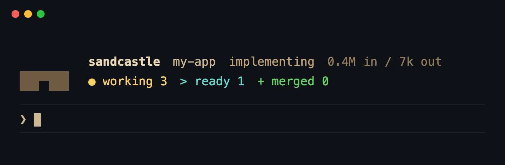

Unattended Claude Code agents for your ticket backlog.
- a ticket
- its own sandbox
- a second agent reviews
- your lint, tests, build
- your local branch
Queue tickets, start a run and read the report in the morning. Nothing is pushed until you push it.
$ git clone https://github.com/henkisdabro/sandcastle-kit.git ~/sandcastle-kit && cd ~/sandcastle-kit && pnpm install && ./bin/sandcastle setup
DRY_RUN=1 sandcastle run the first time: it implements, reviews and gates your tickets, and merges nothing.
macOS (OrbStack or Docker Desktop) or Linux (rootful Docker Engine), Node 22+, and a Claude subscription or API key.
A run, as the status view shows it
An example night, played back as sandcastle status shows it: thirteen tickets, nine merged, two left for you, two waiting on those.
- Ticket 41, rate limiting: implemented and reviewed, failed its tests, repaired, reviewed again, merged.
- Tickets 42, 43, 45, 48, 49, 52 and 53: implemented, reviewed, gates green, each merged as it went green while the others worked.
- Ticket 44, a date library upgrade: still failing three tests after two repairs; left for you.
- Ticket 46: gates green, but it changes CI config, so it is held for you to merge by hand.
- Ticket 47: waited for ticket 41; once that landed, it started in a free sandbox in the same run, and was implemented, reviewed and merged.
- Tickets 50 and 51 wait for 44 and 46 to close.
- By morning: nine branches merged into the local main branch, none of it pushed.
- Agents run with permission prompts off, so:
- their token cannot push
- the kit runs your tests itself
- changes to CI and hooks wait for you
- nothing is pushed
A real run: the kit, on its own backlog
The kit is built by its own runs. This is one of them, on 4 October 2026, from the run record. Every ticket is a public issue you can open.
- tickets
- 18
- merged
- 18
- left open for a person
- 2, a criterion unmet
- wall clock
- 1 h 40 min
- tokens
- 28.4M in / 343k out
- models
- Sonnet 5.5 implements, Opus 5.5 reviews
- sandboxes
- 5 at once
- #252Size: a read-only sandcastle size command that recommends the pool's limits25m1.9M / 25k
- #249The gates phase time includes the wait for a machine-wide gates slot16m1.4M / 14k
- #244A green resolution held by the stray-path check reports 0 commits and no gates22m1.9M / 14k
- #258backup-size test fails intermittently: 2 packs after a drop, not 131m1.0M / 20k
- #251An ended run's status view shows the next run's settings beside the report's recorded ones18m1.1M / 12k
- #250One ticket can spend an hour and 19M tokens with no ceiling short of idle15m878k / 10k
- #248The pool tests take 10-66 seconds each and slow the test gate 2-8x under load19m2.2M / 38k
- #243The <ungated>, <unmet> and <changelog> readers match a tag named in prose10m623k / 12k
- #242Tickets that edit protected paths always end held; say so before queueing and requeueing35m2.5M / 24k
- #241Report and status treat a hand-merged held branch as one the agent handed back22m3.3M / 30k
- #240Idle mark: the skill trigger reads the count before the skill's own labelling27m1.7M / 17k
- #239Doctor: the kit's own checkout is never a project, so its project checks are skipped27m660k / 7k
- #237pnpmStore mounts the versioned store dir, so sandboxes nest a second store inside the host's9m396k / 7k
- #254Size: recommend the pool's limits from measured sandbox and gate peaks19m2.5M / 41k
- #253Size: setup and doctor point to sandcastle size while the pool limits are untouched defaults22m1.3M / 14k
- #247The run estimate is about half the real cost for a run of carried or conflicting branches29m2.6M / 30k
- #246A requeued or resolver-held green branch is re-implemented and re-reviewed in full7m1.3M / 19k
- #245Needs you says a stray-held branch changes test files, hiding the real reason10m994k / 9k
bar = minutes in worktokens in / outwent back once, after a red gate or a conflict, and merged on its second try
A test that did not test: "a run below its share does hold back a younger wait" filled the pool. The younger run waited only because no slot was free, so the test also passed with the wait-order check removed.
In the 26 runs measured for this example, a ticket ended merged 110 times, in a conflict 8 times and held for a person 6 times. These are historical figures from this TypeScript project, whose tests take a few minutes; a slower suite or a bigger model costs more.
You already run Claude Code all day. It still needs you in the loop.
Today you drive
pick the ticket · start the session · carry the context · check the result · againyou sleep, it stops
With sandcastle-kit you start it, then read the report
sandcastle runsix sandboxes, one ticket each read the report
+ it fitsGitHub Issues or ticket filessmall, closed ticketslint · types · tests · buildyou would rather read a report
- not yettickets that say "make it faster"nothing tests anythingyou want to pair livetickets only in Linear or Jira
Why not a loop of claude -p, subagents or worktrees?
You can, and then you build the rest yourself.
| Wired up by hand | sandcastle-kit | |
|---|---|---|
| Where the agent runs | your machine, with your credentials | a Docker sandbox per ticket, holding a token that cannot push |
| Who checks the work | the agent that wrote it | a second, stronger agent, against the ticket |
| Who runs the tests | the agent, when it remembers | the kit, on every branch and again on the merge |
| Merging | you, one branch at a time | each branch as it goes green; a conflict gets a second try |
| Changes to CI, hooks, install scripts | merged like the rest | held for you |
| The morning after | scrollback in six terminals | one report: what merged, what is red and why, what needs you |
One night, one run
sandcastle runYour gates run onmainfirst. Red there, and nothing is spent.- six sandboxesOne ticket each, on its own branch. A green one lands while the rest work.
- a red gate, repaired#41 fails its tests, is repaired, reviewed again and lands. #47 waited for it, and starts.
- nine merged#44 and #46 are left for you. Nothing is pushed.
- you read the reportPush once you have read it.
sandcastle requeue 44sends a ticket back.
With autonomy: "drain", the run keeps taking turns by itself until the queue is drained, and says why it stopped.
How it works
-
1/5
Install
sandcastle setup -
2/5
Point at a project
sandcastle init -
3/5
Queue tickets
ready-for-agent -
4/5
Run, and walk away
sandcastle run- implement
- review
- your gates
- land
one sandbox per ticket, in parallel
-
5/5
You push
sandcastle report
First time? DRY_RUN=1 sandcastle run implements, reviews and gates, and merges nothing.
Each step in full
-
Install once
./bin/sandcastle setupputssandcastleon your PATH, installs the agent skill for Claude Code, Codex and OpenCode, walks you through your tokens and ends with a health check. -
Point it at a project
sandcastle initreads your stack and fills in the gate commands for you to check against CI.sandcastle buildmakes the project's image. -
Queue tickets
Label a GitHub issue
ready-for-agent, or give a ticket file that status. Ask your agent for/sandcastle queueto tighten the vague ones first, or/sandcastle auditto find work in a repo with no tickets yet. -
Run
sandcastle run, orDRY_RUN=1 sandcastle runthe first time: implement, review and gate, but never merge or close. Watch it withsandcastle status, or from Herdr's sidebar. -
Land and push
sandcastle reportprints the summary again.landmerges a branch you fixed,requeuesends a ticket back. Then you push.
Or ask your agent
Before the first run
- initsets up your gates and a lean sandbox
- auditfinds work and files it as tickets
- queueasks one question per vague ticket
Every run after
- runasks, then starts the run and writes its summary
- statusreads a live run, or the last one
- pause / resumeholds a run and carries on without losing work
- updatepulls the latest kit and says what it changes
/sandcastle Claude Code$sandcastle CodexOpenCode too
What each action does
Before the first run
initreads your CI, sets up the gate commands and rules for agents, agrees with you which skills and MCP servers agents see, and checks that every hook runs in the sandbox. It ends with your gates green onmain.audithas read-only agents check the repo for bugs, security issues, missing tests and stale docs, and files what they can prove as tickets once you have approved the list.queuewalks every open ticket with you. A ticket is queued only when an agent with no chat context could finish it; for the rest you get one question each, with a recommended answer.
Every run after
runshows the queue and models, asks before starting, and leaves the run working in the background. When it ends, you get the summary: what merged, what needs you, what to push.statusreads a live run, or the last one, and the log behind any red row.pause/resumeholds a live run without losing work, then carries on from each ticket's next phase.updatepulls the latest kit, rebuilds the project's image and walks you through what the new version changes for it.
Built for long runs
Fails early
Base gates first, then model preflight.
- your gates, green on
main - every model answers a one-line preflight
- your hooks run in the sandbox
agents start
Spends less
A sandbox loads only what you keep.
Shares the machine
Live runs split the sandbox slots.
six sandbox slots, two projects running
Hold a run without losing work: sandcastle pause · resume
The detail
Fails early
- Your gates on
mainfirst. If one fails there, the run stops before any agent starts. - Preflight. One short reply from every model, so an exhausted plan or an old CLI stops the run at the start, not halfway through.
- Hooks proven. The kit checks that your Claude Code hooks run inside the sandbox, and a test can prove a blocking hook still blocks.
Spends less
- Lean sandboxes. Sandbox agents load only the skills, subagents, commands and MCP servers you keep, and never your plugins: each one costs context on every turn.
- Picks up where it stopped. A ticket sent back builds on its old branch, and a branch that was already green costs only the gates.
- One fix for a shared failure. Tickets red on a test another ticket is repairing wait for its fix. A test already red on the base is reported once, instead of repaired on every branch.
Shares the machine
- Several projects at once. Runs in different projects split the machine's sandbox slots between them rather than starving each other.
sandcastle cap 2limits a live run's share. - CPU and memory counted. Each sandbox has a CPU limit. Landing, base and verify gates take the run's next free gate slot before ticket gates;
sandcastle sizerecommends pool limits from measured memory, and doctor warns when they exceed the VM. - A pause keeps the work. Passes in flight finish and green branches still land. Parked sandboxes close, slots go back to other runs and the machine can sleep until you resume.
- Detached. A run started by your agent outlives the session that started it;
sandcastle waitandsandcastle stopfind it again.
Know what a run spends and leaves behind
Your plan, on screen
See Claude and Codex subscription windows, percentages and reset times in the status view, read from agents' own events without extra requests.
Set USAGE_PAUSE=90 to pause at 90% and resume a minute after the window resets. It is off by default.
Nothing quietly unfinished
A partly-done branch can land, but its ticket stays open with the unmet criterion named. The report tells you what needs a decision and what can run again.
With changelog: true, it also gathers suggested changes and Upgrading notes for you to review.
Follow-ups become tickets
Problems agents find outside their ticket are filed for triage, once per title per run. The summary links them, including when a run stops early.
Reviews read the ticket's comments as well as its body, so added scope is checked before a ticket closes.
Already using the kit? Ask for /sandcastle update in each project, then start a new agent session. Release notes and upgrade checks.
Watch it where you already work
sandcastle status works in any terminal, showing run settings and subscription usage with reset times. Two optional extras put the run in front of you.
In Claude Code

An optional mod (a Claude Code plugin, in early access) shows the run above the prompt of the session that started it, and names the tickets that need you.
The detail
Above the prompt
- A band while it runs. The run's stage and tokens, and how many tickets are working, need you, are ready to land, are blocked or have merged.
- A line when you are needed. A conflict, a red gate, a held branch or a crash pins a line naming the tickets, until they are dealt with or the run ends.
When it ends
- A closing prompt. When the run's process is gone, the session where you used
/sandcastlegets a prompt and writes the closing summary, even if you quit Claude Code and resumed that session in between. - Ticket status on demand.
/sandcastle-statuslists every ticket and where it is, without a model turn.
Between runs
- Ready tickets. Between runs, a quiet row of sand above the prompt shows how many tickets a run would start now:
♜ sandcastle · 4 ready - /sandcastle run. The count is read in the background, at most once every ten minutes per project. - Hide the reminder.
/sandcastle-mark dismisshides the count until another ticket becomes ready;hideturns the mark off for the project.
In Herdr
♜ 4/9 · 1 needs you
Herdr is a terminal multiplexer for coding agents. There the run is one line in the sidebar, red when it needs you, and a key opens the status view over any tab.
The detail
Over any tab
- The status view on a key. Herdr's prefix key, then
Shift+S, opens it over whatever you are doing;qputs you back. Prefix, thenShift+E, shows the last run's report. - A ticket a click away. Use the status view's click hint (Cmd-click in iTerm2, Ctrl-click in Terminal.app and Ghostty) to open a ticket's card: its state, each pass with its outcome and time, and why it is held or red, with a key for each pass's log.
In the sidebar
- The run at a glance. The run is one entry in the sidebar, and its workspace reads
♜ 4/9 · 1 needs you, red when something needs you. The tab bar lists every live run on the machine, and the sidebar shows Claude and Codex plan usage when available. - Each sandbox, if you want them. With sandbox panes on (
herdr: { panes: "all" }in the project config, orSANDBOX_PANES=allfor one run), each one is named after its ticket with its step and time in it:review · 12m.
Out of your way
- One tab per run. A run started by your agent runs detached, in a tab that holds only its status view, and outlives the session that started it. The view returns after a Herdr restart, and the tab shows the closing report when the run ends.
- Set up when you say.
sandcastle herdr configureshows what it adds to Herdr's config and asks first;--removetakes it out again.
Safe to leave alone
Agents run with permission prompts off, inside Docker. The container is the boundary, and only a green, reviewed branch gets through the wall.
Docker sandbox
An agent, prompts off
- a token that cannot push
- a ticket, which grants no permissions
- Reviewa second agent, against the ticket
- Your gateslint, tests and build, run by the kit itself
- Risky? It waits for youCI, hooks, install scripts, protected paths
Your machine
Merged into your local branch
.gitis fingerprinted- host hooks stay off
GitHub
Nothing pushed
- labels, comments, completed issues closed
- follow-up issues filed for triage
The detail
Into the sandbox
- A token that cannot push. Only a fine-grained GitHub token for issues goes in, and
sandcastle doctor --verifychecks it cannot push. An empty value is refused, so a host API key cannot leak in. - Tickets grant no permissions. A ticket that asks an agent to touch
.git/, credentials or a push is not the work, and the guards below hold if an agent tries anyway.
Before a merge
- Review, then your gates. A second agent reviews every branch against its ticket and fixes what it finds. Then the orchestrator, never the agent, runs your lint, tests and build. Only a green branch merges, and the merged branch is gated again.
- Risky changes wait. A green branch that changes hooks, CI, agent settings, package-manager config, install scripts or a path you protect is labelled
ready-for-humanand left for you. So is one that adds a file over 50 MB, a repair whose review failed, and a conflict resolution that drops lines git had merged.
On your machine
- Nothing is pushed. Green branches merge into your local base branch. The kit never pushes or deploys; on GitHub it labels and comments on issues, closes completed ones and files agents' follow-ups for triage.
.gitis fingerprinted. If a sandbox changes.git/config,HEAD,info/or hooks, or moves your base branch, the run stops before your machine runs another git command there.- Host hooks stay off. During a run the kit's own git calls on your machine ignore hooks, so a branch that adds one cannot run it as it lands.
Install
-
Install the kit, once per machine:
$ git clone https://github.com/henkisdabro/sandcastle-kit.git ~/sandcastle-kit && cd ~/sandcastle-kit && pnpm install && ./bin/sandcastle setup -
Point it at a project:
$ cd ~/code/your-project && sandcastle init && sandcastle build -
Mark a couple of tickets
ready-for-agentand try a dry run. It implements, reviews and gates them, but never merges or closes a ticket:$ DRY_RUN=1 sandcastle run
Needs macOS or Linux, Node 22+, pnpm, git 2.31+, jq, ps (procps, on Linux) and the GitHub CLI signed in (skippable with ticket files). On Linux, use rootful Docker Engine as a normal user in the docker group; rootless Docker, userns-remapped Docker and Podman are refused. On macOS, use OrbStack or Docker Desktop. Full requirements.
Questions
What does it cost to run?
The kit is free and MIT-licensed. Agents use your Claude subscription or an Anthropic API key through Claude Code; an API key takes precedence and the kit asks before spending it. Codex cross-review uses your ChatGPT plan or OpenAI API key. Runs using the same account share its allowance. The status view shows subscription usage and reset times from agent events, without extra requests. USAGE_CHECK=1 checks Claude plan usage before starting tickets; USAGE_PAUSE=90 opts into pausing at 90% of a provider's plan window and resuming a minute after its reset. Without usage pause, an agent hitting the limit stops the queue.
Which models does it use?
By default Claude Sonnet 5.5 implements and Claude Opus 5.5 reviews. A model: or effort: label sets the implementer's model or effort for one ticket, and CROSS_REVIEW=1 adds a third review by an OpenAI model through Codex.
Does it push to GitHub?
No. Green branches merge into your local base branch. A completed ticket is closed with a comment; a partly-done ticket stays open with the unmet criterion named. Agents' follow-ups are filed for triage. You push when you are happy with what landed.
What about my own work in that repository?
A run refuses to start on a dirty tree or off the base branch, and it merges into that checkout while it runs. Leave the checkout alone until the run ends, and do your own work in another clone.
What if a branch is green but wrong?
Then it is in your local branch and nowhere else. A second agent reads every branch against its ticket before your gates run, and the report lists what merged, so you read before you push. Behaviour that no test covers has only that review between it and your branch.
What happens on a merge conflict?
A branch that conflicts as it lands goes back for one more try in the same run. A second conflict is left for you, and so is a resolution that drops lines git had merged.
Can the text of a ticket make an agent do something else?
It can try. The sandbox holds a token that only reaches issues, the kit runs your gates itself, and a branch that changes CI, hooks, install scripts or a path you protect waits for you whatever the ticket said.
Can a run go all night?
Yes. A run keeps the machine awake while work is in flight (caffeinate on macOS, systemd-inhibit on Linux). Closing a MacBook's lid still sleeps it unless it is on power with an external display. A paused run lets the machine sleep once its passes finish. A ticket whose blocker lands starts in the same run, and autonomy: "drain" keeps taking turns until the queue is drained or something stops it. Partly-done tickets are retried unless the remainder needs a person's decision; a drain stops after the same ticket is left partly done twice.
Do I need Matt Pocock's skills?
No, but they help. His /to-tickets and /triage are a good way to write tickets an unattended agent can finish, and the kit reads the tracker and labels his setup skill records.
Linear, Jira, Windows?
Linear issues can block a ticket today, but the queues are GitHub Issues and Markdown ticket files. The kit runs on macOS and Linux.
Built on Sandcastle
Sandcastle by Matt Pocock does the sandboxing, worktrees and agent orchestration underneath. This kit is one opinionated way to put it to work. If it helps you, go and star the original.